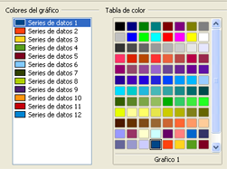
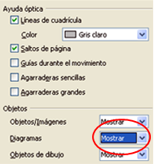
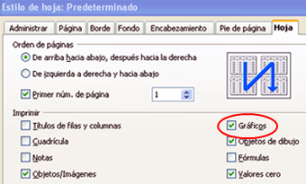

Hojas de cálculo
5.5. Visualización e impresión
Visualización 
La visualización de los gráficos se puede modificar en el menú "Herramientas", "Opciones".
En este menú, hay un apartado especial para gráficos que nos permite cambiar los colores del gráfico seleccionándolos en una paleta de colores.
Dentro de las "Opciones" de "Herramientas", en el menú "Ver", tenemos la opción de mostrar u ocultar los gráficos de la hoja de cálculo.
Impresión
En esta opción únicamente se desactiva la visualización del gráfico, pero no la impresión. Si queremos que un gráfico no se imprima es necesario desactivarlo en el menú "Formato", "Página", "Hoja".

Comprueba lo aprendido
Obra publicada con Licencia Creative Commons Reconocimiento No comercial Compartir igual 4.0